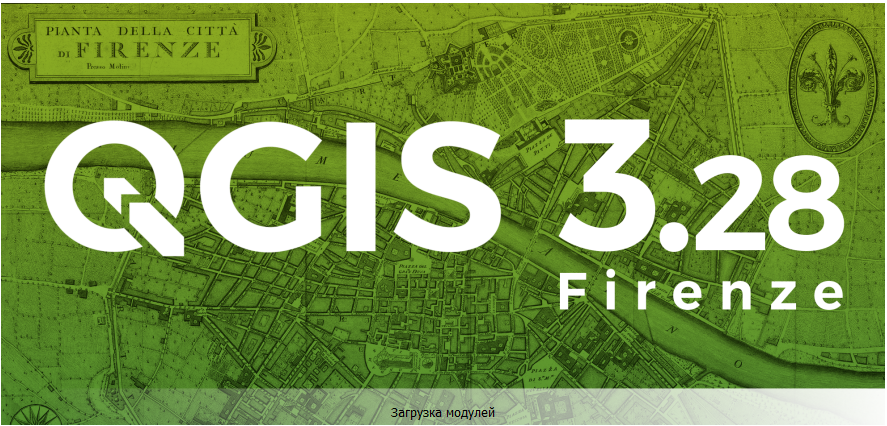
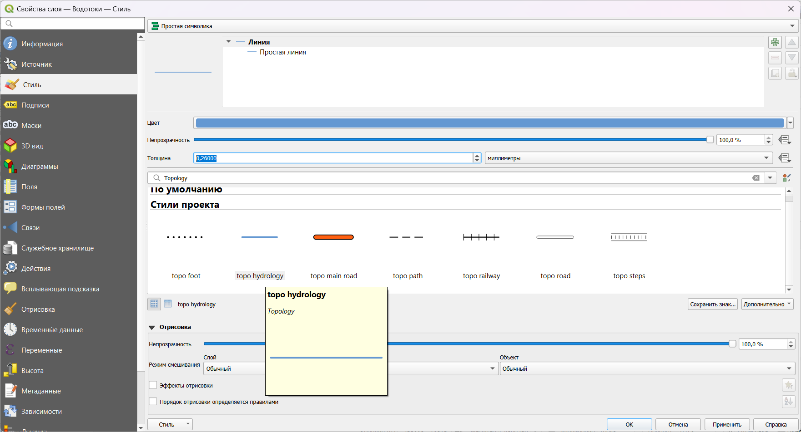

Упражнение 1 Создание общегеографической карты
1.1 Введение
Цель задания — знакомство с моделями пространственных объектов и базой пространственных данных. Визуализация данных на карте. Оформление легенды и компоновки карты.
Необходимая теоретическая подготовка: модели пространственных данных, модели пространственных объектов, базы пространственных объектов, картографические проекции.
Необходимая практическая подготовка: практическая подготовка не требуется.
Исходные данные: база географических данных на территорию Кавказских гор, собранная из нескольких источников.
Ожидаемый результат: общегеографическая карта гор Кавказа и прилегающих территорий масштаба 1:4 500 000.
1.2 Начало работы
Скачайте архив с исходными данными для упражнения и распакуйте его в свою рабочую директорию. В вашей рабочей директории должна появиться папка Ex01
Запустите QGIS. Для запуска воспользуйтесь иконкой с названием
QGIS Desktop ..., где...— номер версии QGIS, установленной на вашем компьютере.Окно загрузки QGIS
В открывшемся окне QGIS нажмите кнопку Создать новый проект , чтобы создать новый проект.
Сохраните проект QGIS в папку Ex01, где лежат материалы к упражнению. Для этого нажмите иконку сохранения
 , в открывшемся окне проводника перейдите в папку Ex01 и введите название вашего проекта QGIS по шаблону:
, в открывшемся окне проводника перейдите в папку Ex01 и введите название вашего проекта QGIS по шаблону: <Ex01_%Фамилия%>, где%Фамилия%— ваша фамилия латинскими буквами.
Окно проводника с целевой директорией и именем проекта
Окно QGIS должно принять вид, аналогичный показанному на изображении ниже
Окно QGIS после создания нового проекта
Ряд действий в QGIS можно выполнить с помощью горячих клавиш. Так, для создания нового проекта можно нажать
Ctrl+N, а для сохранения проекта —Ctrl+S. Сведения о доступных горячих главишах отображаются во всплывающих подсказках при наведении курсора на иконку.Найдите в рабочем окне QGIS панель браузера и разверните в нём домашний каталог проекта

Панель браузера в окне QGIS
Домашний каталог проекта — это папка (каталог, директория), где сохранён проект, в котором вы работаете в настоящий момент.
6.В домашнем каталоге разверните содержимое директории raster_data. В этом каталоге отображается единственный источник данных — 30n030e_20101117_gmted_mea300.tif. Иконка  и расширение
и расширение *.tif (Tagged Image Tile Format) подсказывают вам, что этот источник представляет пространственные данные в растровой (регулярно-сеточной) модели.

> Замечание 1: растр, с которым вы будете работать сейчас, сохранён в формате [GeoTIFF](https://www.opengeospatial.org/standards/geotiff). От «обычного» TIFF этот формат отличается тем, что сведения о пространственной привязке в GeoTIFF записываются непосредственно в файл с данными, в то время как «обычный» формат TIFF не поддерживает запись сведений о пространственной привязке, поэтому она хранится отдельно — в [world-файле](https://en.wikipedia.org/wiki/World_file). В дальнейшем вы часто будете работать и с тем, и с другим способом хранения пространственных данных.
> Замечание 2: файл `30n030e_20101117_gmted_mea300.tif` является фрагментом («тайлом») глобальной цифровой модели рельефа (ЦМР) [GMTED2010](https://www.usgs.gov/land-resources/eros/coastal-changes-and-impacts/gmted2010). Этот источник часто используется для геоинформационного анализа и картографирования. Загрузить тайлы GMTED2010 можно через сервис [EarthExplorer](https://earthexplorer.usgs.gov/) геологической службы США.Дважды щёлкните левой кнопкой мыши на название файла
30n030e_20101117_gmted_mea300.tifв окне браузера. В панель слоёв (по умолчанию она находится слева) добавится слой с названием30n030e_20101117_gmted_mea300.
Окно QGIS после добавления нового растрового слоя
Сохраните проект и сделайте снимок экрана.
Снимок экрана №1. Окно QGIS после загрузки набора данных
Примечание: файл проекта QGIS (*.qgs, *.qgz) и документ карты ArcGIS (*.mxd) отличаются от тех файлов, с которыми вы работали ранее (документы Word, таблицы Excel и т.п.). В файлах проекта хранятся не сами пространственные данные, а только ссылки на них и настройки их отображения (включая порядок слоёв, символику и подписи). Если вы перемещаете файл проекта относительно источников данных, ссылки «теряются». Поэтому важно правильно организовать структуру ГИС-проекта. В рамках нашего упражнения мы разместили файл проекта в директории более высокого уровня по отношению к тем директориям, где лежат данные. Теперь, если мы переместим всю папку Ex01 вместе со всем её содержимым, относительные пути от файла проекта до файлов данных не изменятся, и проект сохранит работоспособность. Конечно, такое решение не будет оптимальным для крупных организаций с разветвлённой структурой сетевых ресурсов, но для студенческих проектов оно, как правило, работает.
1.3 Настройка системы координат
В правом нижнем углу карты вы видите надпись . Нажмите на эту надпись, чтобы открыть интерфейс выбора системы координат проекта.

Свойства проекта: системы координат
В открывшемся окне вы видите более подробную информацию об используемой системе координат. Код EPSG:4326 соответствует системе географических координат WGS 84. Термин «географическая система координат» (geographic coordinate systems) в ГИС означает, что координаты объектов и линейные параметры растров хранятся в виде широты и долготы. Альтернативный подход — проецированные системы координат (projected coordinate systems), где плановые координаты измеряются в метрических единицах.
Система координат проекта была импортирована из первого (в нашем случае — пока единственного) загруженного источника пространственных данных. Система координат WGS 84 обычно не используется для картографирования, поэтому мы изменим систему координат проекта.
Для выбора проекции воспользуемся удобным инструментом, который позволяет оптимизировать этот процесс — Projection Wizard.
Перейдите на сайт Projection Wizard. Настройте параметры территории и проекции следующим образом:
- класс проекции по виду искажений: равнопромежуточная (Equidistant);
- охват территории картографирования: от 39° с.ш. до 46° с.ш., от 36° в.д. до 51° в.д.
Если все сделано верно, то окно приложения должно принять приблизительно следующий вид:
Вам будет предложено две проекции. Нажмите на ссылку PROJ, соответствующую косой азимутальной проекции (англ. oblique azimuthal). На экране будет отображено всплывающее окно с параметрами выбранной проекции в формате PROJ.
Скопируйте строку PROJ в буфер обмена
Также вставьте скопированную строку в отчётный документ
С помощью сайта Projection Wizard вы успешно создали новое определение системы координат. Теперь нужно ввести это определение во внутреннюю базу QGIS.
В QGIS откройте меню Настройки — Пользовательские проекции…
Нажмите кнопку Добавить систему координат

В полях для ввода ниже введите название проекции:
Azimuthal Equidistant (Caucasus), в поле Формат выберитеProj, в поле Параметры вставьте скопированную строку PROJ.
Определение новой системы координат
Замечание: формат PROJ помечен в QGIS как «Устарело, не рекомендуется», но тем не менее мы используем его в этом упражнении, потому что использование более нового и совершенного формата WKT может привести к ошибкам QGIS на следующих шагах.
Нажмите кнопку Проверить, чтобы убедиться, что синтаксис вставленной строки корректен
Нажмите ОК.
Вы успешно добавили новую систему координат в пользовательский список. Теперь нужно применить её к проекту.
Откройте интерфейс выбора системы координат. Это можно сделать нажатием на элемент в правом нижнем углу, или через меню Проект — Свойства… (вкладка Система координат).
В открывшемся меню найдите в списке свою проекцию (для этого можно использовать поле “Фильтр” вверху окна), выберите её и нажмите ОК.
Новая система координат в окне параметров проекта
Если все сделано верно, изображение ЦМР должно приобрести форму сфероидической трапеции. Сделайте снимок экрана и вставьте его в отчётный файл.

Проект с изменённой системой координат
Сохраните проект и сделайте снимок экрана
Снимок экрана №2. Окно QGIS после изменения проекции
Закройте интерфейс выбора системы координат и нажмите правой кнопкой на слой 30n030e_20101117_gmted_mea300 в таблице слоёв. В контекстном меню выберите Свойства… и в открывшемся окне перейдите на вкладку Информация. Вы видите, что проекция набора данных не изменилась. QGIS, как и большинство ГИС-пакетов, умеет трансформировать наборы данных для отображения их в целевой проекции. На жаргоне ГИС-специалистов это называется «перепроецирование на лету» (reprojection on the fly).
1.4 Навигация по карте
Чтобы иметь возможность рассмотреть территорию картографирования более детально, потребуется увеличить масштаб и переместить изображение. Изучите функциональные возможности инструментов навигациии, которые расположены на панели инструментов Map Navigation (если панель отсутствует, щелкните на пустом поле среди панелей инструментов, и активируйте соответствующий пункт в меню):

Инструменты перемещения по карте
Некоторые инструменты навигации могут быть задействованы независимо. Например, масштабирование выполняется прокруткой колеса мыши, а перемещение по карте — движением мыши с зажатой средней кнопкой.
Режим панорамирования (перемещения карты) также активируется нажитием пробела. Зажмите пробел и просто двигайте курсор мышкой или тачпадом. Нажимать кнопку мыши или тачпад при этом не надо!
После того как инструменты навигации станут понятны, установите масштаб карты равным \(1:5~000~000\). Это можно сделать в элементе Масштаб в нижней панели QGIS. При этом достаточно ввести только знаменатель масштаба, выделив его двойным кликом и заменив на нужное значение без пробела (5000000).
После этого переместите изображение таким образом, чтобы Кавказские горы занимали картографическое изображение целиком по ширине.
Охват данных для продолжения работы над картой
1.5 Оформление изображения рельефа
Изображение рельефа, которые вы видите, представляет собой так называемую аналитическую отмывку по высоте. Для аналитической отмывки используется шкала оттенков серого, применяемая по умолчанию. Мы будем использовать аналитическую отмывку по высоте вместе со светотеневой отмывкой.
Откройте свойства слоя
30n030e_20101117_gmted_mea300и перейдите на вкладку Стиль.Измените тип представления с Одноканальное серое на Одноканальное псевдоцветное.
Установите минимальное значение равным 0, а максимальное значение — 4000.
Настройки стиля растра
В строке выбора градиента («Градиент») нажмите правой кнопкой на шкалу и в открывшемся контекстном меню выберите опцию Создать новый градиент…
Создание нового градиента
В появившемся всплывающем окне в ниспадающем списке выберите тип градиента Каталог: cpt-city (подробнее о cpt-city)
Выбор каталога градиентов
В открывшемся каталоге в разделе Topography выберите градиент c3t3 и нажмите OK

Выбор градиента
После нажатия OK были закрыты все окна, кроме окна свойств слоя
30n030e_20101117_gmted_mea300. Нажмите OK, чтобы применить изменения символики и закрыть окно свойств слоя. Окно проекта QGIS примет вид, аналогичный показанному на рисунке ниже.
Окно QGIS после применения стиля слоя
Вы успешно применили аналитическую отмывку по высоте к цифровой модели рельефа. Но для красочного, визуально привлекательного изображения этого недостаточно. Помимо аналитической отмывки по высоте, мы создадим светотеневую отмывку.
Переименуйте слой
30n030e_20101117_gmted_mea300вАналитическая отмывка. Для этого откройте контекстное меню слоя (нажмите на слой в таблице слоёв правой кнопкой мыши) и выберите опцию «Переименовать слой».Названия слоёв никак не затрагивают источник пространственных данных. До тех пор, пока вам не приходится работать со слоями с помощью скриптов на языке Python, вы можете никак не ограничивать себя в названиях.
Используя контекстное меню, создайте дубликат слоя
Аналитическая отмывка(опция называется «Дублировать слой»).Дубликат слоя будет помещён в таблице слоёв ниже исходного слоя, его отображение будет отключено, а к его имени будет приписано “копия”. Дубликат представляет собой самостоятельный слой, после его создания он никак не связан с исходным слоем.
Обратите внимание, что оба слоя используют один и тот же источник данных. Вы можете сделать сколько угодно слоёв с разными настройками визуализации на базе одного и того же набора пространственных данных. Но если вы измените используемый набор пространственных данных, это повлечёт за собой автоматическое изменение вида слоёв (но не настроек их визуализации).
Назовите новый слой
Светотеневая отмывка, включите его отображение и переместите его наверх панели слоёв.Слои в QGIS отрисовываются последовательно в том порядке, в котором они перечислены в панели слоёв. Сначала визуализируется самый нижний слой, затем второй снизу и так далее.
Откройте свойства слоя «Светотеневая отмывка» и перейдите на вкладку «Стиль».
Измените способ визуализации на Теневой рельеф и нажмите Применить. При этом изменения будут применены, но окно свойств не закроется.

Окно QGIS после применения стиля слоя «Светотеневая отмывка»
На этом шаге вы видите изменения, произошедшие с вашим слоем. Во-первых, изображение светотеневой отмывки полностью закрыло изображение аналитической отмывки по высоте. Эту проблему можно решить, включив настройки прозрачности для слоя. Во-вторых, сама светотеневая отмывка выглядит очень тёмной. Это связано с несовпадением единиц измерения «по горизонтали» и «по вертикали» в исходном наборе данных: ячейки растра образут градусную сетку, а высотные отметки хранятся в метрах. Проблему можно решить двумя путями: трансформировать слой в проецированную систему координат или применить коэффициент масштабирования по оси Z (Z-factor). Мы пойдём вторым путём и будем изменять значение коэффициента масштабирования.
Коэффициент масштабирования представляет собой переводной коэффициент из «вертикальных» единиц измерения в «горизонтальные». Для растров на градусной сетке, коэффициент, строго говоря, будет различным по широте и долготе в силу сближения меридианов.
Рассчитайте коэффициент масштабирования по отношению к 1° долготы и 1° широты (на широте параллели касания проекции). После этого сверьтесь с результатом ниже:
Помимо переводного коэффициента между единицами измерения, нам нужно дополнительно масштабировать высоты по вертикали, чтобы отмывка выглядела более «рельефно». В разных случаях применяется дополнительный множитель в диапазоне от 1,5 до 10, мы воспользуемся коэффициентом 5.
Перемножьте оба коэффициента и введите полученное значение в качестве коэффициента масштабирования по оси Z для слоя «Светотеневая отмывка».
Перейдите на вкладку Прозрачность и установите коэффициент непрозрачности для слоя равным 50 %. Примените изменения и закройте окно свойств слоя.

Окно QGIS после изменения свойств светотеневой отмывки
Сохраните проект и сделайте снимок экрана.
Снимок экрана №3. Изображение рельефа с высотной и светотеневой отмывкой
Далее мы не будем напоминать вам о необходимости сохранять проект. Делайте это сами после каждого значительного изменения в проекте.
Примечание для картографов: настройки визуализации рельефа, которые применяются в этом упражнении, подобраны приблизительно, без предварительного анализа распределения высот картографируемой территории и выбора оптимальной шкалы. Эти вопросы подробно освещаются в курсах «Оформление карт» и «Общегеографическое картографирование», читаемых на кафедре картографии и геоинформатики
1.6 Добавление векторных наборов данных
Раскройте содержимое папки vector_data в домашнем каталоге проекта
Содержимое папки vector_data
Вы видите несколько источников данных, обозначенных символом . Это векторные наборы данных, представленные в формате шейп-файлов.
Теперь откройте эту же директорию через Проводник Windows (или любой другой файловый менеджер). Сравните количество файлов в Проводнике с количеством доступных источников данных в браузере QGIS
Шейп-файлы были базовым форматом ГИС-пакета ArcView и за счёт этого получили очень широкое распространение. Шейп-файлы не такие функциональные, как базы геоданных ESRI (современный базовый формат для продуктов линейки ArcGIS) или GeoPackage, но тем не менее их продолжают активно использовать. Многие особенности шейп-файлов обусловлены спецификой и возможностями компьютеров начала 90-х гг. В частности, геометрия набора данных хранится отдельно (в файле
*.shp), семантика — отдельно (в формате dBASE,*.dbf), а для связи между ними используется индекс-файл (*.shx). Эти три файла — обязательные компоненты шейп-файла. Помимо них, отдельно могут быть записаны сведения о проекции (*.prj), кодировке (*.cpg) и многое другое. Основным файлом, тем не менее, считается*.shp, а все остальные на компьютерном сленге называются sidecar-файлами.
Важно: при копировании шейп-файлов через Проводник необходимо копировать все файлы с одинаковым именем
Добавьте на карту наборы данных об объектах гидрографии (
hydrography-polyline.shp,hydrography-polygon.shp). В таблице слоёв разместите линии над полигонами. Переименуйте слои в «Водотоки» и «Водоёмы» соответственно.Все векторные наборы данных для этого упражнения созданы на основе цифровых географических основ ВСЕГЕИ. Это один из немногих общедоступных источников пространственных данных общегеографического содержания на территорию Российской Федерации и ближнего зарубежья.
Настройте символику для добавленных векторных наборов данных. Также, как и для растров, настройки символики векторных данных помещаются в свойствах слоя, на вкладке Стиль.
- Для полигонов гидрографии установите стандартный стиль topo water из библиотеки QGIS.
- Для линейных объектов используйте стандартный стиль simple blue line, но уменьшите толщину линии до 0,26 мм

Если приглядеться, то можно увидеть, что знак контура береговой линии и знаки линейных объектов гидрографии на суше не совпадают. Можно изменить цвет и толщину обводки для полигонов объектов гидрографии, сделав их такими же, как у рек и каналов.
- Для полигонов гидрографии установите стандартный стиль topo water из библиотеки QGIS.
Добавьте к карте железные дороги и автодороги. Переименуйте слои и изобразите их линиями толщиной 0,26 мм. Для автодорог используйте красный цвет, для железных дорог — тёмно-серый (20 % светлоты).
После всех операций окно QGIS должно принять вид, аналогичный изображению ниже.

Окно QGIS после добавления слоёв гидрографической сети и путей сообщения
1.7 Использование атрибутов объектов при визуализации
До этого момента мы работали только визуальным представлением слоя и никак не касались семантической составляющей. На следующем шаге вы будете использовать разные значки для различных типов объектов в одном слое.
Добавьте к карте набор данных
adm_line, переместите добавленный слой ниже всех линейных объектов и переименуйте его в «Границы».Вызовите контекстное меню слоя «Границы» и выберите опцию «Открыть таблицу атрибутов». Откроется таблица атрибутов источника данных.
Таблица атрибутов слоя «Границы»
Таблица атрибутов — это представление базы данных, связанной с набором пространственных объектов. База функционирует по общим правилам реляционной базы данных: каждый объект представляется одной «строкой», в каждом столбце (поле) одному объекту соответствует одно значение. Атрибуты играют важную роль в геоинформационных системах. На их основе происходит визуализация данных, также они участвуют в большинстве операций пространственного анализа. В этом упражнении вы используете атрибуты, чтобы присвоить различные стили объектам в одном слое.
Закройте таблицу атрибутов.
Откройте свойства слоя границ на вкладке Стиль.
Измените тип визуализации с Простая симолика на Символизация по уникальным значениям. Эта настройка позволяет присваивать объектам различные стили в соответствии со значениями определённого атрибута.

Способы визуализации векторных наборов пространственных данных
В выпадающем списке Поле выберите столбец
L_TYPE, по которому будет происходить классификация, и нажмите кнопку Классифицировать внизу формы.В форму добавились три записи. Две из них представляют фактически имеющиеся значения атрибутов, третья — «пустая» — предназначена для визуализации всех остальных значений (которых фактически нет в таблице на настоящий момент, но которые могут появиться позже в результате редактирования).
Рассчитанные классы с разными условными знаками
Дважды щёлкните на значке, соответствующем классу Границы государственные. Откроется уже знакомый вам интерфейс настройки условных знаков. Обратите внимание на форму в левом верхнем углу: вы можете задать несколько слоёв для одного условного знака, используя опцию добавления слоёв (
).Слои в таблице слоёв и слои условного знака — это две разные, не связанные между собой сущности.
Создайте для государственных границ двухслойный знак. Нижний слой: линия серого цвета (75 % светлоты) шириной 1 мм, с плоскими концами (чтобы концы линии не «свешивались» в воду). Верхний слой: линия тёмно-серого цвета (светлота 20 %) толщиной 0,26 мм, штрихпунктирная, с плоскими концами.

Настройки визуализации линий границ
Создайте аналогичный знак для границ субъектов РФ. Нижний слой: линия серого цвета (75 % светлоты) шириной 0,8 мм, с плоскими концами. Верхний слой: линия тёмно-серого цвета (светлота 20 %) толщиной 0,26 мм, штриховая, с плоскими концами.
Для прочих границ используйте однослойный условный знак: пунктирная линия тёмно-серого цвета.
1.8 Подписи
Добавьте на карту набор данных
elevation_points.shp, расположите слой на самом верху списка и переименуйте его в Вершины. Настройте отображение единым знаком в виде чёрного треугольника, аналогично тому, как показываются отметки высот в школьных географических атласах.Откройте таблицу атрибутов слоя. Какие поля можно использовать для подписей?
На общегеографических картах обычно приводятся высоты и названия горных вершин. В этом упражнении мы ограничимся названиями.
Закройте таблицу атрибутов и откройте свойства слоя. Перейдите на вкладку «Подписи». Переключите режим подписей на Обычные подписи (подписывать объекты значением атрибута). В открывшемся меню в выпадающем списке «Подписывать значениями» выберите поле
NAME— тексты подписей будут «считываться» из него.Вкладка настройки текста
В поле Образец текста отображается пример подписи с теми настройками, которые заданы по умолчанию. Если вы будете менять настройки подписей (шрифт, форматирование, «гало» и др.), этот пример будет меняться. Сейчас мы последовательно пройдём по вкладкам настройки подписей, исправив необходимые параметры.
- На вкладке Текст установите гарнитуру («шрифт») Times New Roman, начертание («стиль») полужирный курсив, кегль («размер») 8.
- На вкладке Буфер включите опцию «Буферизовать подписи» и задайте буферизацию размером 0,6 мм. Это повысит читаемость подписей на карте.
- На вкладке Размещение выберите опцию «Картографическое», расстояние 0,1 мм от границ знака (from symbol bounds)
Примените настройки подписей и закройте свойства слоя.

Окно QGIS после добавления слоёв границ и отметок высот
В каталоге
vector_dataостался незадействованный слой — населённые пункты (population_points). Добавьте его в проект, переименуйте и самостоятельно настройте условные знаки и подписи. Используйте параметр уникальные значения для того, чтобы отобразить города с разной численностью населения разными условными знаками.После завершения настройки населённых пунктов сделайте снимок экрана
Снимок экрана №4. Окно QGIS после завершения настройки символов
1.9 Настройка компоновки карты
Изображение, которое вы видите во фрейме данных, можно экспортировать в отдельный графический файл «как есть» (с помощью опции Проекты — Импорт/экспорт — Экспортировать карту как изображение…). Однако для картографических целей, как правило, формируется компоновка карты. На листе заданного формата размещается картографическое изображение, добавляется название, легенда, масштабная линейка и элементы зарамочного оформления.
Сейчас мы создадим макет компоновки с расчётом на то, что итоговая карта будет вставлена в отчёт.
Создайте новый макет компоновки (Проект — Создать Макет…) или
Ctrl+P.Введите название макета: Ex01_%Фамилия%, где %Фамилия% — ваша фамилия на русском языке.
После ввода названия откроется окно компоновки (Layout)

Добавьте на лист картографическое изображение. Для этого используется инструмент Добавить карту из панели инструментов. Выберите инструмент и «растяните» прямоугольник карты на листе.
Инструмент добавления карты
После добавления элемента откроется панель его свойств. Изучите настройки, доступные в этой панели, а затем установите для карты знаменатель масштаба 4 000 000 и размеры \(237\times130\) мм. В том же разделе, где устанавливаются размеры элемента, задайте для элемента карты положение по \(X = 30\) мм и положение по \(Y = 30\) мм.
Положение элемента на листе отсчитывается от верхнего левого угла листа до точки привязки элемента.

Картографическое изображение в макете компоновки
Добавьте к карте градусную сетку. Для этого в свойствах элемента найдите раздел Сетки, нажмите на кнопку Добавить новую сетку, а затем Настроить сетку… (Modify Grid). Откроется меню настройки сетки. Задайте для сетки проекцию WGS84, интервал по долготе — \(4°\), интервал по широте — \(2°\). Также уменьшите толщину линий сетки до \(0.1\) мм. Для этого щёлкните левой кнокой мыши по элементу Стиль линии и выполните необходимые настройки в уже привычном для вас интерфейсе. Вернуться обратно к настройкам сетки можно, нажав на кнопку Назад в левом верхнем углу интерфейса.
Панель настроек сетки
Добавьте рамку сетки в виде простой линии. Для этого в свойствах элемента в разделе Рамка установите настройку Стиль области: Линия границы
Панель настроек сетки
Включите отображение подписей координатной сетки. Для этого в настройках координатной сетки отметьте флажок Отображение координат. Настройте отображение подписей так, чтобы широта подписывалась только вдоль западной и восточной рамки, а долгота — только вдоль северной и южной. Используйте формат координат Десятичные с окончанием и нулевое число знаков после запятой (этот параметр в QGIS называется Точность координат).
Панель настроек сетки
Вернитесь к макету и передвиньте картографическое изображение внутри элемента таким образом, чтобы вместилась вся основная часть Главного Кавказского хребта. Можно ориентироваться на города: в северо-западном углу карты должен отображаться Краснодар, в юго-восточном — Баку. При необходимости можно уменьшить масштаб карты.
Для перемещения карты внутри фрейма используется инструмент Перемещение содержимого элемента
 .
.Добавьте на лист название карты. Для этого вставьте новую надпись и разместите её над элементом карты. Введите название карты «Кавказские горы», используйте выключку (горизонтальное выравнивание) по центру, настройте параметры шрифта на своё усмотрение (заголовки обычно набираются прописными буквами с разреженным кернингом).

Макет компоновки после добавления названия
Добавьте на лист масштабную линейку с помощью кнопки Добавить масштабную линейку
 . Переместите линейку в юго-западный угол карты, установите для неё отображение фона и границы. Если необходимо, уменьшите высоту линейки, кегль шрифта и отступы подписей, чтобы линейка смотрелась более компактно.
. Переместите линейку в юго-западный угол карты, установите для неё отображение фона и границы. Если необходимо, уменьшите высоту линейки, кегль шрифта и отступы подписей, чтобы линейка смотрелась более компактно.Добавьте на лист легенду с помощью кнопки Добавить легенду
 . Легенда будет собрана автоматически на основе тех настроек визуализации, которые применены для слоёв карты.
. Легенда будет собрана автоматически на основе тех настроек визуализации, которые применены для слоёв карты.Отредактируйте легенду. Для этого сначала выключите автообновление (Auto update) элементов легенды, чтобы сделать список элементов доступным для редактирования. Сохраните в легенде только условные знаки населённых пунктов и границ, а также переименуйте неинформативные или пустые подписи.
Добавьте обводку для элемента легенды и разместите легенду в северо-восточном углу карты.
Макет компоновки после добавления масштабной линейки и легенды
Добавьте ещё один текстовый элемент и впишите в него сведения об авторстве.
Экспортируйте получившуюся карту в изображение формата PNG («Макет» — «Экспорт в изображение…» или специальная кнопка на главной панели инструментов макета).
| Энтин А.Л., Самсонов Т.Е., Карпачевский А.М. Основы геоинформатики: практикум в QGIS. М.: Географический факультет МГУ, 2023. |